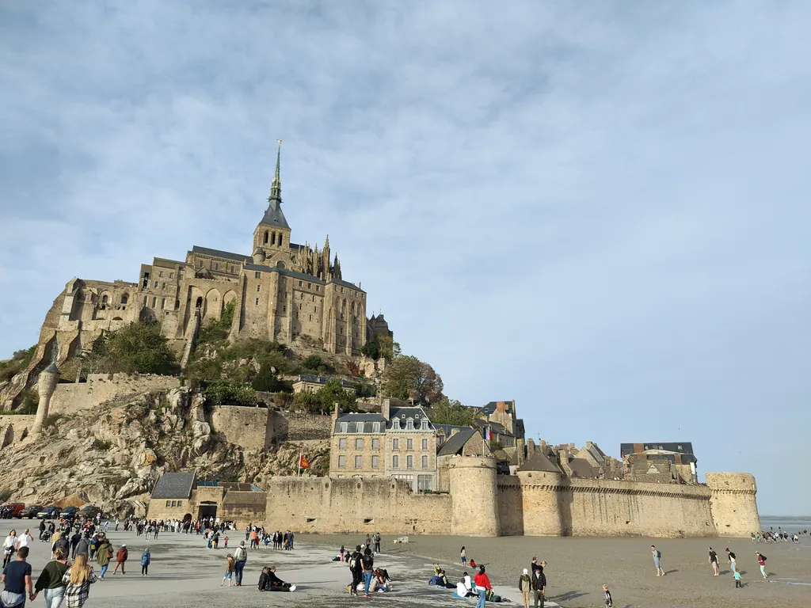
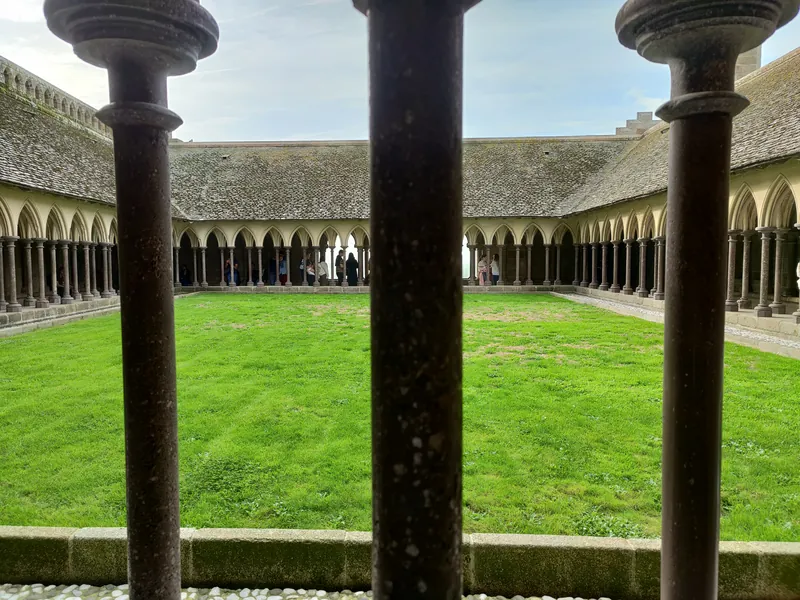

Opactwo to powód, dla którego w ogóle istnieje Mont-Saint-Michel, i dla większości odwiedzających jedyna część, za którą naprawdę się płaci: obwarowane miasteczko i mury poniżej są bezpłatne. Ten przewodnik jest dla każdego, kto chce z góry ogarnąć bilety do opactwa Mont-Saint-Michel — ile kosztuje wstęp, jakie są aktualne godziny, co jest w cenie i co naprawdę zobaczysz po wejściu do środka.
Omówimy rodzaje biletów, najlepszą porę na wejście, różnicę między zwiedzaniem opactwa a spacerem z audioprzewodnikiem po wyspie, a na koniec obejrzymy wnętrza sala po sali. Na końcu będziesz wiedzieć, czy rezerwować z góry, ile czasu zaplanować i czego nie przegapić.
Wciąż planujesz całą wyprawę? Zacznij od naszego kompletnego przewodnika po Mont-Saint-Michel, a potem wróć tu po szczegóły o opactwie.
Bilety do opactwa w skrócie
Opactwo jest płatne — miasteczko jest darmowe, ale do opactwa potrzebny jest bilet, z taryfami ulgowymi i bezpłatnymi dla młodzieży i mieszkańców UE. Kupuj online z wyprzedzeniem i ze stałym oknem czasowym, zwłaszcza w szczycie sezonu: kolejka na miejscu potrafi przekroczyć godzinę, a dzienna liczba odwiedzających jest ograniczona. Godziny otwarcia — od rana do wczesnego wieczora, dłużej latem, plus kilka dni zamknięcia w roku.
Zarezerwuj bilety na Tiqets →
Gdzie kupić bilety do opactwa
Oficjalne bilety do opactwa sprzedaje Centre des monuments nationaux. Jeśli są wyprzedane na Twoją datę i godzinę — co w lipcu i sierpniu jest częste — zaufany sprzedawca taki jak Tiqets to łatwe rozwiązanie zapasowe: to samo wejście, okno czasowe, natychmiastowy bilet w telefonie i bezpłatna anulacja w większości opcji.
Opactwo Mont-Saint-Michel — bilet wstępu
Wejście na godzinę · z pominięciem kolejki do kasy · bilet mobilny
Od 16 € · bilet normalny · natychmiastowe potwierdzenie
- Rezerwujesz konkretną godzinę wejścia i mijasz kolejkę do kasy
- Bilet mobilny — pokaż go w telefonie, bez drukowania
- Bezpłatna anulacja do 24 godzin w większości opcji
Rezerwacja przez naszego partnera Tiqets. Płacisz tę samą cenę; możemy otrzymać niewielką prowizję.
Jak naprawdę wygląda zwiedzanie
Opactwo to klasztor benedyktynów wspinający się po skale warstwami. Nie przechodzi się z sali do sali na jednym poziomie — idzie się trasą jednokierunkową, która wznosi się i opada przez kościół, krużganek, refektarz i sale wbudowane w północne zbocze. To zwiedzanie z mnóstwem schodów: uwzględnij to i załóż wygodne buty.
Trasa jest w większości samodzielna. Możesz przejść ją sam, dodać audioprzewodnik po opactwie albo dołączyć do wycieczki z przewodnikiem. W szczycie sezonu opactwo reguluje ruch wejściami na godzinę — właśnie dlatego warto rezerwować z wyprzedzeniem.
Bilety do opactwa Mont-Saint-Michel: rodzaje i ceny
Opcji jest kilka, a właściwy wybór oszczędza czas i pieniądze. Wstęp standardowy to podstawa; jest niewielka dopłata za audioprzewodnik po opactwie; wycieczki z przewodnikiem kosztują więcej i mają ograniczone miejsca; a wstęp ulgowy lub bezpłatny dotyczy pewnych grup — z reguły bezpłatnie dla osób poniżej 18 lat i rezydentów UE poniżej 26 lat. Jeśli przysługuje Ci ulga, weź dokument.
Najbardziej przydatna rada: w lipcu i sierpniu kolejka na miejscu potrafi pochłonąć 1,5–2 godziny dnia, a dzienny limit jest ograniczony — bilet online na godzinę to najprostszy sposób, by ominąć czekanie i zapewnić sobie wejście. Rzecz, na której wielu się potyka: bilet do opactwa nie obejmuje parkingu na lądzie ani wahadłowca — płaci się za nie osobno.

Samodzielny audioprzewodnik po Mont-Saint-MichelNatychmiastowy dostęp
- 100% offline — bez Wi-Fi i transmisji danych
- Mapa GPS offline — każde nagranie uruchamiasz sam na miejscu
- 8 języków, narracja prawdziwym głosem
- Działa na iOS i Android
- Samodzielnie, około 2–3 godzin
Godziny otwarcia opactwa
Godziny zmieniają się z sezonem — dłuższe latem, krótsze zimą — a ostatnie wejście jest zwykle około godziny przed zamknięciem. W kilka świąt opactwo jest zamknięte. Ponieważ zmienia się to z roku na rok, sprawdź aktualny grafik na oficjalnej stronie przed wyjazdem. Zasada ogólna: latem godziny są dłuższe, czasem z wieczornymi seansami muzyki i światła; zimą zamyka się wcześniej; i zawsze patrz na godzinę ostatniego wejścia, a nie tylko zamknięcia.
Co jest w środku: sala po sali

Trasa jednokierunkowa prowadzi po najważniejszych punktach po kolei. Na górze jest kościół opacki: romańska nawa łączy się z późniejszym chórem w stylu gotyku płomienistego; wyjdź na Taras Zachodni przed nim po jeden z najszerszych widoków na zatokę. Klejnotem architektury jest La Merveille (Cud): trzykondygnacyjny kompleks gotycki na północnym zboczu, ze spichlerzem i przytułkiem dla ubogich na dole, Salą Rycerską i salą gości pośrodku oraz refektarzem i krużgankiem na górze.
Krużganek to najczęściej fotografowane wnętrze opactwa: ogród otoczony smukłymi podwójnymi kolumnami, jakby zawieszony między morzem a niebem. Sąsiedni refektarz oświetlają wysokie, wąskie okna, których niemal nie zauważasz, dopóki nie wejdziesz — zamierzona gra światła. Niżej mijasz Kryptę Grubych Filarów, której potężne kolumny podtrzymują chór powyżej, oraz wielkie koło deptane z czasów, gdy opactwo było więzieniem, niegdyś używane do wciągania ładunków na skałę. Nie odchodź bez widoku z Tarasu Zachodniego, krużganka i spojrzenia w górę na złoconą figurę świętego Michała wieńczącą iglicę.
Przewodnik, audioprzewodnik czy na własną rękę?
Forma zwiedzania zmienia wrażenia bardziej, niż się wydaje. Na własną rękę to opcja najbardziej elastyczna i najtańsza poza biletem: sam ustalasz tempo i zatrzymujesz się, gdzie chcesz, choć bez wcześniej przeczytanego kontekstu może wydać się uboga. Audioprzewodnik po opactwie dodaje ten kontekst sala po sali za niewielką dopłatą i dla większości samodzielnych zwiedzających to złoty środek. Wycieczka z przewodnikiem na żywo kosztuje więcej i wiąże Cię z grupą i harmonogramem, ale dobry przewodnik ożywia puste kamienne sale detalami, które inaczej byś minął. Wybierając, kieruj się temperamentem: sam, jeśli cenisz swobodę; audio, jeśli chcesz opowieść bez grupy; przewodnik, jeśli lepiej przyswajasz od człowieka. Tak czy inaczej pamiętaj: przewodnik po opactwie obejmuje tylko wnętrze — miasteczko i mury na zewnątrz to osobny, bezpłatny spacer.
Spacer po wyspie a zwiedzanie opactwa
Osoby po raz pierwszy często mylą dwie różne rzeczy. Zwiedzanie opactwa to płatna trasa wewnątrz klasztoru na górze. Wejście przez miasteczko — bramy, Grande Rue, kościół Saint-Pierre, mury — jest bezpłatne i osobne.
Jeśli chcesz podczas wejścia usłyszeć historie samego miasteczka, samodzielny format taki jak spacer z audioprzewodnikiem po wyspie od TouringBee opowiada drogę od brzegu do drzwi opactwa na mapie offline, a potem zostawia Cię do zwiedzania wnętrza opactwa na własny bilet. Potraktuj to jak dwie połowy jednej wizyty: trasa po wyspie prowadzi Cię na górę z kontekstem, a bilet do opactwa wpuszcza do środka. Nie nakładają się, więc nigdy nie płacisz dwa razy za to samo. Zobacz audioprzewodnik po wyspie →
Najlepsza pora dnia na wizytę
Wejdź na pierwsze wejście rano — najspokojniejsza godzina, zanim przyjadą autokary — albo późnym popołudniem, gdy autobusy odjeżdżają, a światło na tarasie łagodnieje. Południe latem to najbardziej zatłoczone i najwolniejsze okno, lepiej go unikać. O sezonowości przeczytasz w naszym przewodniku o najlepszej porze na wizytę.
Dostępność
Opactwo to średniowieczna budowla na skale: mnóstwo schodów, strome i nierówne odcinki, a dostęp bez stopni na wyższe poziomy jest ograniczony. Osoby o ograniczonej mobilności powinny wcześniej sprawdzić aktualne warunki dostępności i możliwości pomocy.
Praktyczne wskazówki
- W szczycie sezonu kup bilet online — omiń kolejkę i zapewnij sobie wejście mimo dziennego limitu.
- Przyjdź na pierwsze wejście lub późnym popołudniem po najspokojniejszą wizytę.
- Załóż wygodne buty — trasa to same schody i wytarty kamień.
- Zaplanuj 1,5–2 godziny w środku, więcej z audioprzewodnikiem.
- Weź ciepłą warstwę: w salach jest chłodno, a na tarasie wieje.
- Sprawdź godzinę ostatniego wejścia, nie tylko godzinę zamknięcia.
Częste błędy
Typowe potknięcia: przyjście w południe latem bez rezerwacji i strata godzin w kolejce; założenie, że darmowy wstęp do miasteczka obejmuje wnętrze opactwa (nie obejmuje); przegapienie ostatniego wejścia, mniej więcej godzinę przed zamknięciem; przebiegnięcie przez krużganek i taras — czyli właśnie tego najbardziej się potem żałuje; oraz mylenie audioprzewodnika po opactwie z samodzielnym spacerem z audio po wyspie — to różne produkty.
Częste pytania
Ile kosztują bilety do opactwa Mont-Saint-Michel?
Standardowy bilet normalny kosztuje 16 € latem i 13 € zimą, z kategoriami ulgowymi i bezpłatnymi dla młodzieży i rezydentów UE.
Czy trzeba rezerwować bilety z wyprzedzeniem?
Latem tak: bilet online na godzinę oszczędza długiej kolejki i zapewnia wejście mimo dziennego limitu. W spokojniejszych miesiącach zwykle można kupić na miejscu.
Jakie są godziny otwarcia opactwa?
9:00–19:00 od maja do sierpnia i 9:30–18:00 od września do kwietnia. Ostatnie wejście godzinę przed zamknięciem; zamknięte 1 stycznia, 1 maja i 25 grudnia.
Ile trwa zwiedzanie opactwa?
Około 1,5–2 godzin w spokojnym tempie; nieco dłużej z audioprzewodnikiem.
Czy opactwo to to samo co miasteczko?
Nie. Obwarowane miasteczko i mury są bezpłatne; opactwo na szczycie to osobna, płatna wizyta.
Czy mogę zwiedzać opactwo na własną rękę?
Tak, trasa jest samodzielna. Możesz dodać audioprzewodnik lub dołączyć do wycieczki z przewodnikiem, jeśli chcesz.
Czy opactwo jest dostępne dla wózków inwalidzkich?
Dostęp jest ograniczony przez średniowieczną budowlę i liczne schody; sprawdź aktualne warunki z wyprzedzeniem.
Poznawaj dalej
Podsumowanie
Opactwo nagradza odrobinę planowania: weź bilet na godzinę, jeśli przyjeżdżasz latem, wejdź na pierwsze wejście lub późnym popołudniem i daj sobie czas, by zatrzymać się w krużganku i na tarasie, zamiast pędzić trasą. To właśnie te chwile zostają z człowiekiem.
A jeśli chcesz, by wejście do drzwi opactwa przyszło z własnymi historiami — kto zbudował to miejsce, dlaczego nigdy nie upadło, kto jest pochowany na małym cmentarzu poniżej — samodzielny spacer z audio po wyspie od TouringBee wypełnia drogę historią w Twoim tempie, a potem przekazuje Cię opactwu, gdy kontekst masz już w głowie.
Gotowy na wejście?
Zarezerwuj wejście do opactwa na godzinę, a resztę zrobi skała.
Niektóre linki na tej stronie są linkami afiliacyjnymi (Tiqets, GetYourGuide, TouringBee). Jeśli zarezerwujesz przez nie, możemy otrzymać niewielką prowizję — bez dodatkowych kosztów dla Ciebie. Nigdy nie wpływa to na nasze rekomendacje. Zobacz nasze informacje o afiliacji.